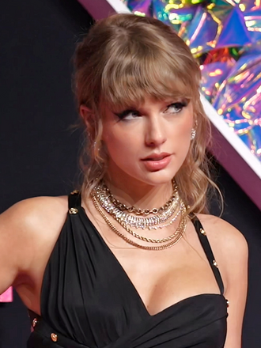

|  | Name | Taylor Alison Swift |
| Born | December 13,1989 | |
| Nationality | American | |
| Alma Mater | Aaron Academy | |
| Occupation | Actress,Songwritter,Singer,Guitarist,Pianist,Composer,ect. | |
| Years active | 2003-present | |
| Height | 5'10" |
Taylor Alison Swift is a singer-songwriter born on December 13, 1989, in West Reading, Pennsylvania. Her father, Scott Swift, is a stockbroker; her mother, Andrea Swift, is a homemaker who previously worked as a fund marketing executive; and her brother, Austin, is an actor. Swift spent her early years on a Christmas tree farm with her parents. At age 9, Swift started taking vocal and acting lessons in New York City and later decided to shift her focus toward country music, inspired by Shania Twain and Faith Hill. When the rising star was around 12 years old, a computer repairman named Ronnie Cremer taught her to play guitar and helped with her first efforts as a songwriter, leading Taylor to write "Lucky You", her first song ever. In 2003, with the help of a family friend manager, she modeled for Abercrombie & Fitch and had an original song included on the show's compilation CD. With it, came the opportunity to attend meetings with major record labels. To help Taylor's break into country music, her father transferred his job to an office in Nashville when she was 14, and the family relocated to a lakefront house in Hendersonville, Tennessee, where Taylor attended high school. Two years later, she transferred to Aaron Academy to better accommodate her touring schedule through homeschooling. She graduated high school a year early because of that.
In Nashville, Taylor started working with songwriter Liz Rose during two-hour writing sessions every Tuesday afternoon after school. Later, she became the youngest artist signed by Sony/ATV publishing house, but left the group at age 14. She believed she was running out of time because she wanted to capture the early years of her life on an album while it still represented what she was going through. At a showcase in Nashville's Bluebird Cafe in 2005, Swift caught the attention of Scott Borchetta, a record executive who was preparing to form an independent record label, Big Machine Records. She became one of Big Machine's first signings, with her father purchasing a three percent share of the company. Taylor then started working on her debut album and persuaded Big Machine to hire Nathan Chapman to produce her songs. Her first lead single “Tim McGraw” was released in June 2006, and Taylor Swift’s self titled album was released later that year, on October 24, 2006. It peaked at number 5 on the US Billboard 200, where it spent 275 weeks. Swift was also the opening act for Brad Paisley’s 2007 tour to promote her album and spent 2006 and 2007 doing promotion on radios, television, and being the opening act for country artists in the US. Throughout 2007 and 2008, Taylor released four more singles from her debut album and all of them appeared on Billboard's Hot Country Songs chart. Swift released her first two EPs "The Taylor Swift Holiday Collection" and "Beautiful Eyes" in October 2007 and July 2008, respectively, winning accolades for all of her first three projects. She became the youngest person to be honored with the BMI Songwriter of the Year title in 2007. She won awards at the CMAs, ACMs and AMAs while also securing a nomination for Best New Artist at the 50th Grammy Awards.
| Studio Albums | Re-recorded Albums |
|---|---|
|
|